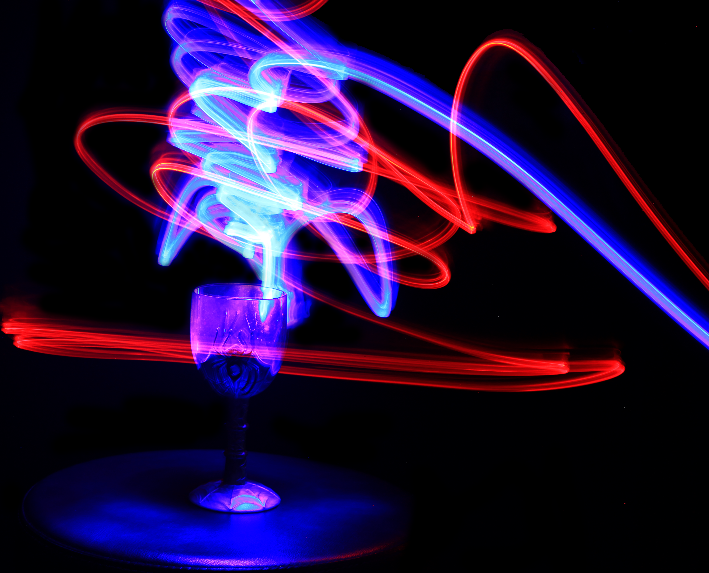
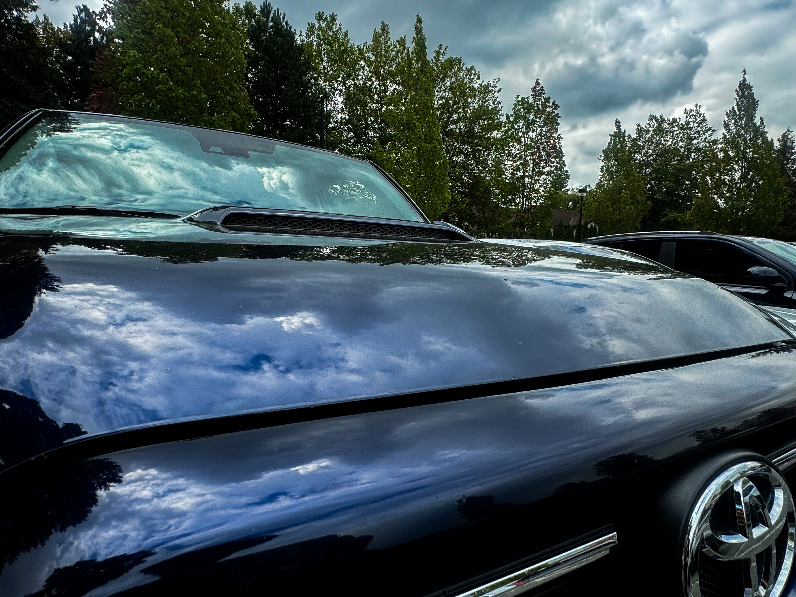

Controlling time is a photographer's superpower. A fast shutter freezes life; a slow shutter turns water into silk.

I always tell beginners to move their feet. A low angle or shooting through leaves creates depth that a standard shot misses.
